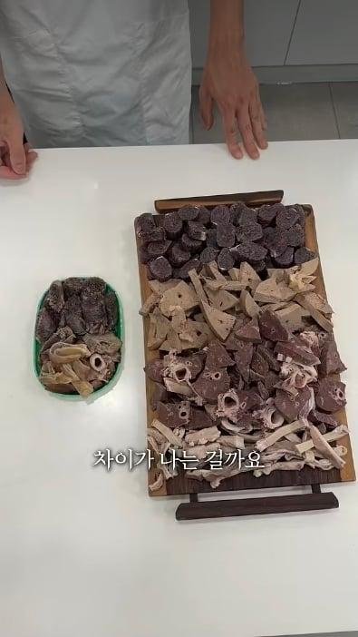

좌 광장시장 우 경동시장
이 정도면 양심과 양아치의 차이라 할만함

좌 광장시장 우 경동시장
이 정도면 양심과 양아치의 차이라 할만함
오른쪽이 어떻게 만원이야
2만원에 팔아도 돈벌기 빡세보이는데
심지어 오소리감투가 많아서 저정도지
오소리빼면 만원에 저거 두배도 더될듯
순대1키로 4500원 온전한간1개 2000원 허파염통울대세트4000원. 썰면 진짜 저거 두배나옴
아니그건 택배로 시켜먹을때나 그런거지 로드샵이나 시장에서 저걸 만원에팔면 장사를 어떻게해
넷이먹어도 될 양인데
만원짜리 순대부속 시켜봐라, 양 장난 아님, 먹다가 지쳐서 이제는 순대 내장 얘기만 해도 신물 나옴
먹다가 식어서 차가워지더라.. 차가운 부속은 너무 맛이 없더라구...
오소리감투 먹고싶다
경동시장 친척들이 도매상 운영해서 꾀 자주 가는데
저기가 유튜버들의 꿀통일꺼임.
현지 상인들 다니는 식당가면 물가랑 인심이 미쳐있음.
지금 유튜브에 있는 경동시장 식당들은 반의 반도 안나온거.
꾀돌이 ㄷㄷ쿤
오른쪽은 좀 심하잖아
거의 원가 수준하고 비교하면 안되지;
둘 다 시장에서 산거 아님??
모둠순대 아줌마 본인 등판
실제로 제로비도 오른쪽 원가를 시중가로 보면 말도 안된다고 함
경동시장은 걍 싸게 떼와서 싸게 왕창 파는거라
가능함
오른쪽은 걍 1키로 9천원짜리 한봉지 부속물 다깐거보다 양이 많은데 개주작아님?
아니 일반 음식점에서는 업소용단가로 받아도 오른쪽처럼 팔면 원가율자체로도 마이너스임 진짜 저거 어떻게 저렇게 파는거냐
저번주에 둘다 갔는데
광장시장에는 영크크도 많고 외국인 관광객도 존나 많음
경동에는 흰머리 나신분 밖에 없었음 시장만 그런게 아니라
청량리역 주변이 그냥 다 노인밖에 없더라
그것도 많이 젊어진거임... 예전엔 진짜 꼬부랑노인밖에없었는데
광장시장가는 국내 흑우 업제? 외국인들 관광용이다이~
배달로 순대 오른쪽만큼 시키려면 최소 3만원 나오겠는데
원래 시장은 우측이 정상임 광장시장은 이름만 시장이지 그냥 시장 코스프레하는 지역마트임
주작이지ㅋㅋㅋ
이럴리가없다
바꿔말하면 우리가 외국가서 시장같은데 가면 저렇게 주고먹는다는말인가
구로몬시장 충격과 공포임
옛날에 한번갔다가 맛살만 하나 사먹었네 ...
다들 그럴리 없다고 부정하는게 개웃긴포인트
왼쪽은 만원짜리 순댓국에 도 저만큼 들어가겟네
얼마나 가스라이팅 당하고 속아왔으면 오른쪽도 말 안된다고 부정하고 있냐ㅋㅋㅋ
인생을 35년 살았는데
옜날에도 만원어치는 저러지 못했음ㅋㅋㅋ
부동산 임대료 차이 아님?
문제는 한국인들이 외국친구가 놀러오면 광장시장에 데려간다는거임 진정한 한국을 보여주고싶어서 그런가봐 이게 k바가지다 이궈야
정신 차리라고 예방접종 맞추는 건가봄
가지마라고 그렇게 노랠불러도 많더만 ㅋㅋ
경동시장은 먹다가 죽겠는데 ㄷㄷ
오른쪽 순대집은 떡복퀸 때문에 알게 된 집
둘다 말이 안되는데?